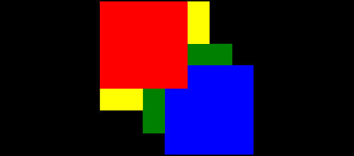

Z-index, opacity и контекст наложения. Или то, что вы, наверняка, не знали.
Практически полностью отсутствует информация на данную тему. И когда в ходе собственных экспериментов при обучении я столкнулся с данной проблемой, ушло немало времени, чтобы понять, как всё это работает.
На Хабре есть статья, еще от 13-года на эту тему, но там не совсем удачный, на мой взгляд, пример. Да и вариантов "странного поведения", как оказалось, намного больше, чем указано в данной статье. В любом случае, идея была взята там на 90%, как и некоторые цитаты.
И да, если у вас браузер исключительно от Microsoft, дальше можно не читать. Они там ничего про это знать не хотят.
Итак, напишем небольшой и легко читаемый код:
<!DOCTYPE html>
<html lang="ru">
<head>
<title>Контекст наложения</title>
<meta charset="utf-8">
<style>
div:nth-child(2) {
opacity: .99;
}
.red, .green, .blue {
width: 200px;
height: 200px;
position: absolute;
}
.red {
background: red;
top: 0;
left: 0;
z-index: 1;
}
.green {
background: green;
top: 100px;
left: 100px;
z-index: 10;
}
.blue {
background: blue;
top: 150px;
left: 150px;
}
.yellow {
background: yellow;
top: 0px;
left: 0px;
width: 250px;
height: 250px;
position: absolute;
}
body {
background: black;
}
</style>
</head>
<body>
<div>
<span class="red"></span><span class="yellow"></span>
</div>
<div>
<span class="green"></span>
</div>
<div>
<span class="blue"></span>
</div>
</body>
</html>
Внимание, вопрос: какой элемент перекроет остальные? "Зелёный! Ведь он имеет наибольший z-index", - скорее всего, скажете вы.

Точно? Вы уверены? Проверьте код, и вы поймёте, что ошиблись. Верный ответ намного интереснее. Сверху окажется красный!

Почему так? Всё дело в контексте наложения. Контекст наложения представляет собой трехмерное расположение html-элементов вдоль воображаемой оси z относительно пользователя. Элементы html занимают это пространство в порядке приоритета на основе атрибутов элемента.
В момент формирования нового контекста на элементе все дочерние элементы также попадают в этот контекст и занимают своё место в порядке наложения. Если элемент располагается в самом низу одного контекста наложения, то никаким мыслимым и немыслимым образом не получится отобразить его над другим элементом в соседнем контексте наложения, располагающимся выше по иерархии, даже с установленным z-index равным миллиону.
Новый контекст наложения формируется в любом месте документа любым элементом в следующих сценариях:
- является корневым элементом документа (HTML);
- для элемента position задано как "absolute" или "relative" и z-index отличен от "auto";
- для элемента position задано как "fixed" или "sticky" (для мобильных браузеров);
- элемент является дочерним для flex (flexbox) контейнера и z-index отличен от "auto";
- элемент с opacity меньше 1;
- элемент со значением mix-blend-mode отличным от "normal";
- элемент со значением isolation равным "isolate";
- элемент со значением -webkit-overflow-scrolling равным "touch".
-
элемент с одним из следующий свойств, имеющих значение отличное от "none":
- transform;
- filter;
- perspective;
- clip-path;
- mask / mask-image / mask-border;
- элемент со значением will-change, которое создаст новый контекст наложения.
Некоторые другие наглядные примеры (на английском языке) можно посмотреть здесь.
Хотя в душе я, наверное, солидарен с разработчиками из Microsoft. Лучше бы это было багом, а не спецификацией. Писать код было бы проще, не думая о таких особенностях.